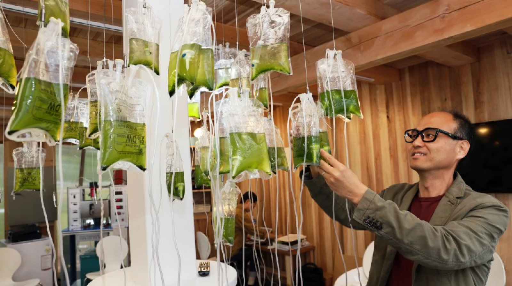

Professor Jaewon Cho - 2019
Material: toilets, grinder, digestion tanks and other chemicla equitment.
Our ultimate goal is not only for the new toilet system to save water and operational costs for wastewater treatment plants, but for us to establish an ecosystem that supports technology innovation and drives economic diversification where human waste literally has a financial value.
Professor Jaewon Cho at UNIST is leading a project focused on a waterless toilet that recycles human waste into biofuel. The waterless toilet system, located on the first floor of the pavillion treats human excrement without using water. The system utilizes a natural biological process to break down human waste into a dehydrated odorless compost-like material. Then, at the microbial energy production system, this compost-like material is converted into biodiesel or heat energy. Once the grinding system inside the toilet converts feces into a dry, odorless material, it will be transferred to a digestion tank, containing thousands of different microbes. The microbes inside the tank will, then, biodegrade the powdered human manure to generate carbon dioxide and methane. Using high pressure and membrane, carbon dioxide is extracted to culture green algae for biofuel while methane is stored for later use as a heating fuel.
What's better than sustainable living?
Let’s be frank: we all use the toilet. With this twenty-first century invention, you will never have to pollute the environment with your waste again!
We believe the energy recycled from human waste can be used to generate electricity and support the whole residence. This artwork is self-sustainable and bring awareness to how much waste we produce every single day.
JAEWEON CHO is professor of environmental engineering at the National Institute of Science and Technology (UNIST) in Ulsan, South Korea. He directs the Convergence Research Center (CRC), named Science Walden, supported by the National Research Foundation of Korea (NRFKorea). He is thinking of how to design many different things, including designing ecological engineering products (such as an eco-toilet), a community education program, and more importantly our thinking.